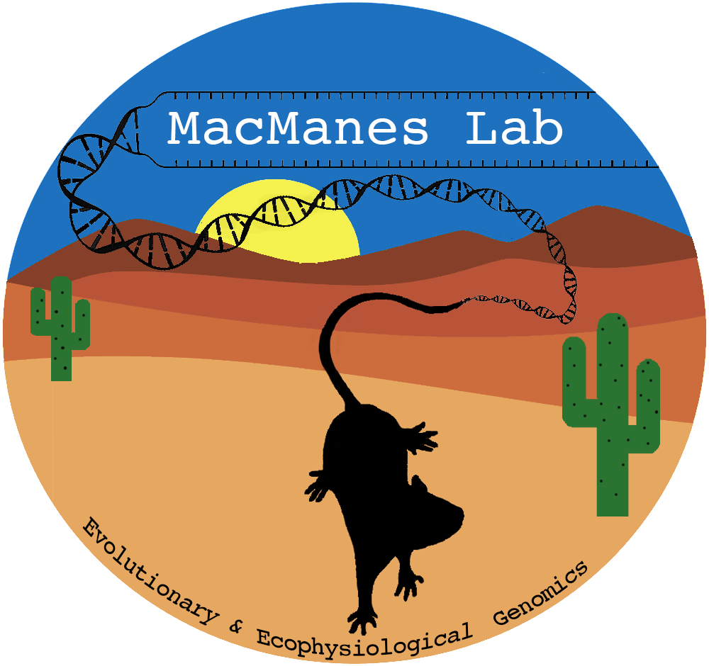
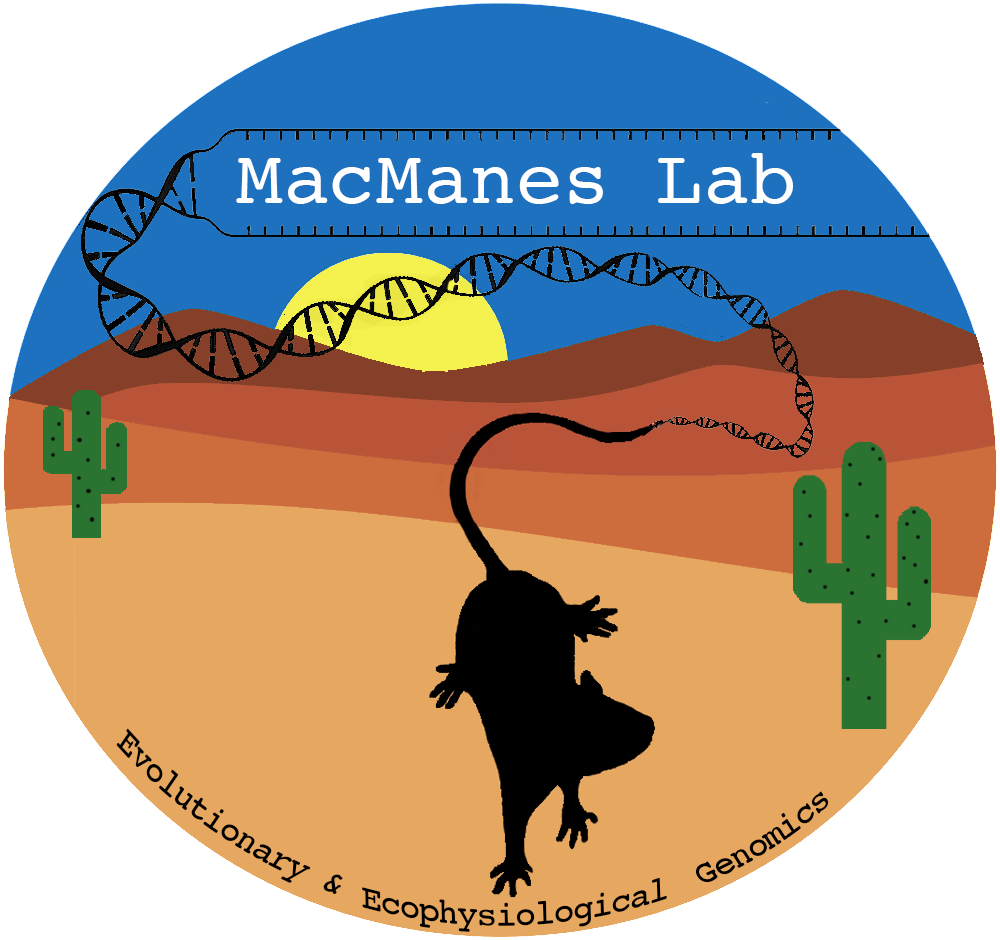

Syllabus
Spring 2021
1 COURSE DESCRIPTION:
test The methods, applications, and implications of genomics–the analysis of whole genomes. Microbial, plant and animal genomics are addressed, as well asmedical, ethical and legal implications. The lab provides exposure and experience on a range of bioinformatics approaches–the computer applications used in genome analysis. Much of this course content was written by Professor Matthew MacManes
2 CONTACT INFORMATION:
Gregg Hall @unh.edu Twitter: Office hours: Schedule at myWildcatSuccess
TA Gregg Hall @wildcats.unh.edu Office hours:
3 ZOOM LINK:
Check the canvas email for zoom link
4 LECTURE:
MWF 10:10-11:00PM Gregg 110 Monday class will be in person for those who want this.
5 LAB:
Friday 3:10-5:00PM Kingsbury N134 Will be in person for 11 people (which 11, TBD).
6 COVID19:
Without a doubt, learning and teaching during global pandemic is going to come with significant challenges! What I want you all to know at the very beginning is that I amright there with you, trying to figure out what it means to live and regain some normalcy in these exceptionally strange times, while still being safe. I hope we can all figure this out ASAP.
In terms of classroom instruction, it is very likely thatwe operate using some hybridmodel for the entire semester. If conditions permit a safe return to in-person instruction, I will be the strongest advocate for that! I would like nothing more than to be in-person with you all.
Full disclosure, I’m not an expert in online class delivery, so I do expect some challenges. These are likely to be small but annoying (like internet, video, audio issues). What I want from you, is your commitment to tell me what I can do better or different in real time. I promise to not be offended if you tell me something I’m doing is not working for you! We’re all figuring this out together in very real sense, so open communication will be critical!
There are very likely to be changes to the class because of COVID, including some that are unanticipated. For instance, how will I administer exams. The university has invested in a remote proctoring system, but no one is quite sure how well this will work. What this means is that we will have to make decisions and changes as we go along. I run the class more like a democracy than dictatorship, so we will vote on issues whenever possible. Please be flexible with me, and I promise I will be flexible with you all.
One specific issue is related to the lab… We have 2 hours per week of lab, and (right now) 32 students. The room capacity is 11 so ya the math does not really work. Stay tuned for a proposal.
7 WEB RESOURCES:
Canvas: I will use this for grades Website: https://macmanes.github.io/GEN711_S21/ Google: everything you’ll learn this semester has been discussed on the internet - a lot. Use it! SummerWorkshops: http://angus.readthedocs.org/en/2014 and http://angus.readthedocs. org/en/2015
8 ASSIGNMENTS AND EXAMS:
Weekly Assignments: These are assigned in lab, and typically involve some sort of sequence analysis and short answer questions. There will be 10 throughout the semester worth 20 points each (200pts total). You may work in groups, but you must submit your own report. These will be due 1 week after they are assigned, typically on Tuesday, unless otherwise instructed. NO late assignments accepted.
Exams: There will be 2 exams covering both lecture and lab material. Each will be worth 100 points. The dates for these will be March 12 and April 30. Makeup exams will be permitted only under extreme documented circumstances, or by prior approval (>1week) fromProf. MacManes.
Final Project: The final project will consist of an oral presentation and written report of a topic related to genomics and bioinformatics. Projects must incorporate an implementation of the computational techniques we’ve learned about. The final project will be worth 200 points (150 written/50 oral). Oral presentations will occur during the last 2 days of class. Written reports will be due on the last day of class. You may work in groups (<5 members - mix of grad and undergrad), with the understanding that expectations increase with group size, given division of labor. More details will be provided later in the semester.
9 MATERIALS NEEDED:
Non-Required but potentially useful Textbook: PRACTICAL COMPUTING FOR BIOLOGISTS 1st edition by Haddock and Dunn. It is available on Amazon new, used and for rent. I think that there is a Kindle version if that is your thing! It should also be available in the campus bookstore, but you may pay more there!
AWS Account: The proportion of genome analyses in the cloud is increasing every day. Supercomputers that usually host our web searches (google) and web shopping (Amazon) sell their extra comutational power when volume is low. We will scratch the surface of the approach to analyzing genomic data at Amazon (AWS). Cloud-computing comes with powerful and cost-cutting tools that will be commonplace in the future of bioinformatics.
Jetstream: For lab exercises, we will use Jetstream, which is an XSEDE resource. You will need to set up an account during the first lab. The EC2 interface will work properly in OSX and Linux operating systems. For those of you withWindows computers, you will need to install a terminal emulator (MobaXterm is one option), or use the OSX computers in the computer lab.
Laptop: Please no one purchase a laptop for this course!!! But please bring it to all course meetings if you do. A Mac or Linux machine will make your life much easier. Windows machines will work with some additional effort.
10 GRADES:
The grade scale is: 93-100=A; 90-92.99=A-; 87-89.99=B+; 83-86.99=B; 80-82.99=B-; 77-79.99=C+; 73-76.99=C; 70-72.99=C-; 67-69.99=D+; 63-66.99=D; 60-62.99=D-; Below 60=F
| Item | Maximum Points |
|---|---|
| Exams | 200 |
| Final Project | 200 |
| Participation | 200 |
| Total Points | 600 |
11 COURSE POLICIES:
Student conduct: Honesty is a core value at the University of New Hampshire. The members of this academic community require and expect one another to conduct themselves with integrity. The Student Rights, Rules and Responsibilities handbook (www.unh.edu/student/rights) explains UNH’s expectation for academic honesty and defines those actions that constitute academic misconduct with regard to exams, homework, plagiarism, computers, etc. The penalty for the first incident of cheating, plagiarism or other breaches of the university’s academic honesty policies will be an automatic F grade for that assignment. A second infraction will result in an F grade for the class. The Dean’s office will be notified and dismissal from the university could result.
Disability Services for Students: The University of New Hampshire is committed to providing students with documented disabilities equal access to all university programs and facilities. If you have a disability requiring accommodation, you must register with Disability Services for Students (DSS). Contact DSS at 862-2607. If you have received an Accommodation Letter for this course from DSS, please meet with Prof. MacManes privately to review those accommodations. 12 CODE OF CONDUCT NeedHelp? You can reach the course instructor, MattMacManes at Matthew.MacManes@unh.edu. Conversations are held in confidence, to the extent that it is allowed by UNH policy (https://www.unh.edu/sharpp/reporting-requirements) and state and federal law.
The Code: Our class is dedicated to providing a harassment-free classroom experience for everyone, regardless of gender, age, sexual orientation, disability, physical appearance, race, or religion (or lack thereof). I do not tolerate harassment of class participants in any form. Sexual language and imagery is not appropriate for any class venue. Class participants violating these rules will be reported to the COLSA Dean’s office.
Harassment includes offensive verbal comments related to gender, age, sexual orientation, disability, physical appearance, race, religion, sexual images in public spaces, deliberate intimidation, stalking, following, harassing photography or recording, sustained disruption of talks or other events, inappropriate physical contact, and unwelcome sexual attention. Class participants asked to stop any harassing behavior are expected to comply immediately. If a participant engages in harassing behavior, the instructor may take any action they deem appropriate, including warning the offender, or reporting to the Dean’s office. If you are being harassed, notice that someone else is being harassed, or have any other concerns, please contact me or the TA immediately.
We will be happy to help participants contact local law enforcement, provide escorts, or otherwise assist those experiencing harassment to feel safe for the duration of the class. This code of conductwas adapted from http://angus.readthedocs.io/en/2017/code-of-conduct.html
13 HOW TO GET AN A:
Receiving an A in this shall should be really easy (I mean it!), assuming you follow these basic guidelines. - Come to class and lab, pay attention, be interactive: Active learning far outcompetes passive, so while coming to class itself is good, interacting/asking questions will be much better. - Ask questions when your confused. Come to office hours, or schedule a time to meet. - Don’t cram! Study a little, several times per week. You will remember more, and the exams will be less stressful. - Read the book and use (with caution) online resources.
14 COURSE SCHEDULE - SUBJECT TO CHANGE:
| Week | Chapter | Topic | Lab |
|---|---|---|---|
| Feb 1 | 1 & 7 | Intro to Bioinformatics and Molecular Evolution | No Lab |
| Feb 8 | 2 & 3 | Finding Data & Pairwise Alignment | Intro to UNIX & Alignment |
| Feb 15 | 4 | BLAST | BLAST |
| Feb 22 | 5 | Advanced Search (BLAT/HMM/others) | HMMER/RepeatMasker |
| Mar 1 | 6 | Multiple Sequence Alignment | MSA |
| Mar 8 | NIB | Modern High Throughput Sequencing | fastA/fastQ file processing |
| Mar 12 | EXAM 1 | ||
| Mar 15 | NIB | Sequence Read Analysis | Exam Given in Lab |
| Mar 29 | 8 | RNA and Transcriptomics | Transcriptome Analyses |
| Apr 5 | 9+ | Gene Expression Measuring | Gene Expression |
| Apr 12 | 16 | Genome Evolution | Differential Expression |
| Apr 19 | NIB | Genome Assembly | No Lab - Veterans Day |
| Apr 26 | NIB | Genome Analyses | Genome Assembly |
| Apr 30 | EXAM 2 | ||
| May 3 | NIB | Population Genomics | Genome Analyses |
| May 10 | NIB | Personal and Medical Genomics | Exam Given in Lab |
| May 17 | NIB | Ethics & Final Project Presentations | No Lab |

 
